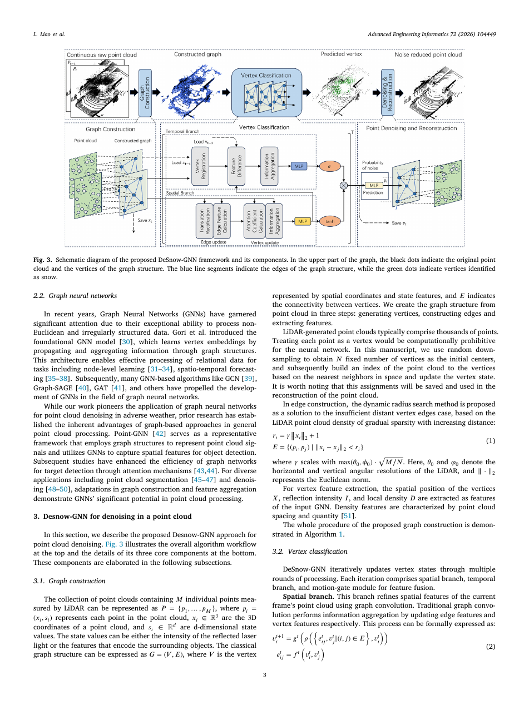
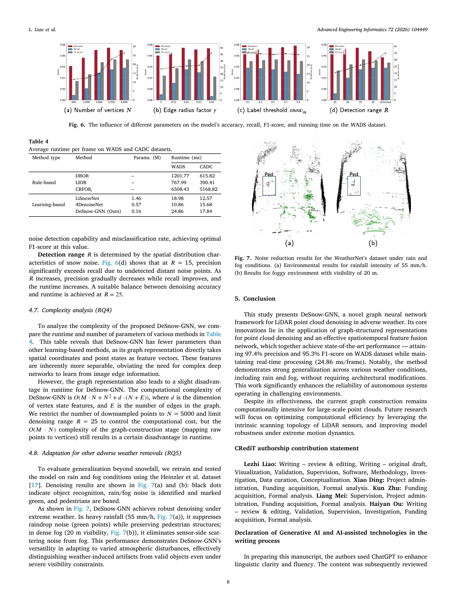

Robotics Research Reader · Stage 1
DeSnow-GNN: Spatiotemporal graph neural network for robust LiDAR point cloud denoising in adverse weather
材料覆盖范围：完整阅读当前 PDF 的摘要、正文、图表、实验、限制与结论，并视觉核对本页嵌入的关键原文页。原文件为
DeSnow-GNN_ Spatiotemporal graph neural network for robust LiDAR point cloud denoising in adverse weather.pdf。本页严格限于 Stage 1：只还原论文故事线，不读取代码，不用第三方解读补写。一、论文一句话在做什么
概括DeSnow-GNN 将稀疏点云直接构造成动态图，用图卷积建模空间关系、轻量配准提取相邻帧运动差异，并以 motion gate 融合时空特征来分类天气噪声点。 （Abstract；Introduction；Method overview）
二、Research Problem
具体问题：在雨雪雾中识别并删除 LiDAR 伪回波。 （Abstract；Introduction）
场景：自动驾驶与机器人连续点云。 （Abstract；Introduction）
重要性：稀疏、不规则、近密远疏的点云不适合简单网格卷积。 （Abstract；Introduction）
后果：噪声会降低检测和跟踪能力。 （Abstract；Introduction）
三、Existing Methods & Gap
| 方法类别 | 原本怎么解决 | 作者指出的不足及影响 |
|---|---|---|
| 规则滤波 | 用密度、强度及距离启发式 | 阈值依赖传感器、难调且近邻计算昂贵。 |
| 2D CNN/range image | 投影为规则网格后卷积 | 量化与投影损失限制稀疏非均匀点云建模，时序也局限于图像空间。 |
| 既有时序/3D 学习法 | KNN、voxel 或多视角建模 | 作者指出参数敏感、搜索成本高或实时性受限。 |
概括作者认为真正缺少的是：作者指出参数敏感、搜索成本高或实时性受限。 （Introduction；Related Work）
四、Core Observation / Insight
- 图结构天然适配非欧式、稀疏点云，并允许沿局部邻接关系传播几何信息。 （Introduction；Method）
- 天气噪声的运动随机，而物体点在相邻帧中具有不同的时序规律。 （Introduction；Method）
- 因此作者把空间图卷积与注册后的运动差分分开提取，再让 motion gate 决定融合比例。 （Introduction；Method）
五、Method：只看宏观逻辑
概括Input：当前帧与相邻历史帧。 （Method；framework figure）
概括随机采样固定数量顶点，以随距离增大的动态半径连边，并聚合坐标、强度和局部密度。 （Method；framework figure）
概括空间分支用图卷积更新顶点；时序分支用全局质心偏移 + 局部特征匹配做轻量注册并提取差分。 （Method；framework figure）
概括motion gate 融合空间与时序特征，分类顶点为雪/非雪。 （Method；framework figure）
概括把顶点标签映射回原始点并重建，Output：去噪点云。 （Method；framework figure）


概括相比已有方法，真正发生变化的核心位置是：空间分支用图卷积更新顶点；时序分支用全局质心偏移 + 局部特征匹配做轻量注册并提取差分。 （Method）
六、Contributions
- Method：作者称其为首个专用于 LiDAR 天气去噪的 GNN 框架。 （Introduction，contributions）
- Method / Efficiency：设计动态半径图构造、轻量时序注册与运动门控融合。 （Introduction，contributions）
- Experiment：在 WADS/CADC 上验证，并扩展到雨雾数据。 （Introduction，contributions）
七、Experiments
- Dataset：WADS、CADC；雨/雾泛化使用 Heinzler et al. 数据。 （Experimental setup）
- Baselines：DROR、LIOR、CRFOR-t、LiSnowNet 等。 （Experimental setup）
- Metrics：Precision、Recall、F1、参数量、运行时间。 （Experimental setup）
- 有组件消融、参数实验、复杂度、定性与定量实验。 （Experimental setup）
实验 1：WADS：Precision 97.4%、Recall 93.5%、F1 95.3%，论文报告为所比方法最优的 precision 与 F1。 （Experiments；相关 Figure/Table）
实验 2：运行时间 24.86 ms/frame，作者称达到实时处理；图构造仍是主要复杂度来源。 （Experiments；相关 Figure/Table）
实验 3：组件消融显示去掉时序分支或 motion gate 会降低 F1；作者据此支持时空融合设计。 （Experiments；相关 Figure/Table）
实验 4：雨雾实验无需改变结构即可训练/测试，Fig. 7 展示对应去噪结果。 （Experiments；相关 Figure/Table）
八、Limitations
作者明确承认的 limitation
作者明确承认：图构造对大规模点云仍计算密集，原始点到顶点的 O(M·N) 映射带来运行劣势；当前以 N=5000、R=25 控制成本。 （Discussion / Conclusion / failure case）
从实验结果中直接可见，但作者没有明确称为 limitation 的现象
直接观察直接观察：CADC 主用于定性可视化，核心逐点定量结论主要来自 WADS。 （相关 Figure/Table）
九、Future Work / Research Implications
优化计算效率，利用 LiDAR 固有扫描拓扑，并提升极端运动动态下的鲁棒性。 （Conclusion）
十、论文逻辑链
概括现实问题：天气粒子产生伪点并损害感知。
概括现有方法：启发式滤波或 2D 投影网络。
概括不足：阈值敏感、信息损失且时序建模不足。
概括观察：图适配不规则点云，噪声运动具有时序差异。
概括思想：在图上联合空间邻域与运动信息。
概括方法：动态半径图 + 轻量注册 + motion gate + 重建。
概括验证：WADS/CADC、消融、复杂度、雨雾扩展。
概括结论：作者报告 95.3% F1 与 24.86 ms/frame。
十一、第一遍阅读结束后，我应该记住的东西
- 概括解决恶劣天气连续 LiDAR 点云的噪声分类。
- 概括核心 gap 是规则阈值和 2D 投影都不能充分利用不规则 3D 时空关系。
- 概括最关键 insight 是天气噪声与真实点在图邻域和跨帧运动上可分。
- 概括核心变化是图卷积空间分支与轻量注册时序分支的门控融合。
- 概括最重要结果是 WADS 上 97.4% precision、95.3% F1，同时约 24.86 ms/frame。
十二、暂时不要深入的内容
- 概括动态半径 γ 与 LiDAR 角分辨率关系（Eq. 1，Algorithm 1）。
- 概括图卷积位移校正与 attention（Eq. 2–5）。
- 概括全局/局部注册与 motion gate（Eq. 6–12）。
- 概括图构造复杂度推导和 N/R 参数权衡（Sec. 4.6–4.7）。